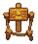

Place for lantern
| Place for lantern | |
|---|---|
 | |
Basic information
| |
Required Technology :
|
Rules of Burning |
Related pages :
|
Lantern network |
Location(s)
| |
| Cabin in the woods, Forest near the river | |

The place for lantern can be either constructed using the workbench near the cabin in the woods or by setting up a lantern network in the forest first.
Around the cabin in the woods, you can construct up to three spots, where you can build lanterns. The lantern network sets up eight spots for them.
Cost
Setting up the spots is free, but building the different types of lanterns there, needs some materials:
| Item Produced | Materials Required | Energy | Notes |
|---|---|---|---|

|
No materials needed. | ||
| 1× Wooden beam 1× Wooden stick 1× Hemp rope |
- |
||
| 1× Wooden beam 3× Simple iron parts 2× Glass |
- |
||
| 4× A piece of stone 4× Simple iron parts 2× Glass |
- |
| ||||||||